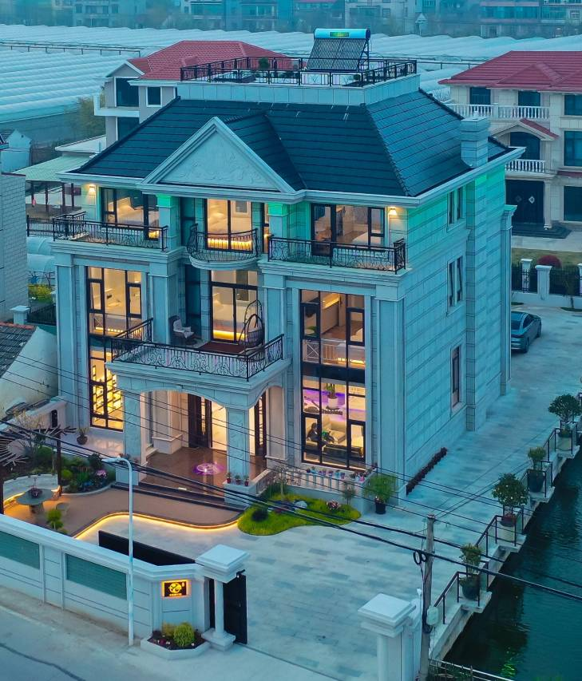
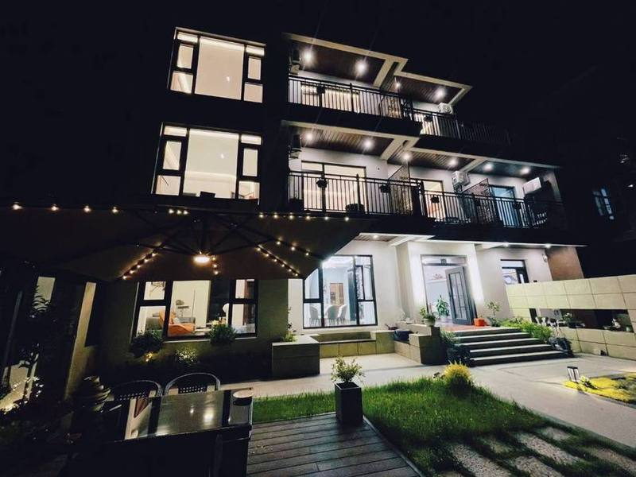
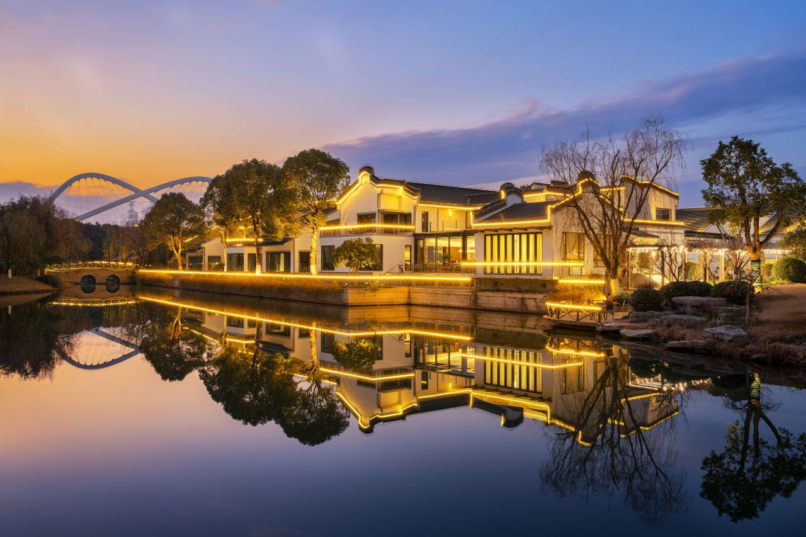

两天一夜 · 玩优先
先选去哪玩，再决定晚上住哪。
18 条玩法路线先按白天体验比较；住宿放在最后，只负责晚上落脚。上海近郊之外，新增 3 条苏州跨城玩法，车程会更长。
先有个方向感
这些地方大概在哪
点区域名称可以跳到对应路线。这里只示意相对位置，不代表真实导航距离。
同一套标准比 18 条
周末路线总榜
白天体验 45 · 内容组合 25 · 省心程度 20 · 证据质量 10。住宿不参与加分。
水乡 · 湖岸 · 森林
青浦 5 条
水乡最集中，晴天看湖和森林，雨天也能换到园林与室内。
海边 · 古镇 · 花田
金山 4 条
想吃海鲜、看海、拍秋景，从这里选一条。
湖景 · 手作 · 夜景
奉贤 3 条
路线更松，适合博物馆兜底、做手作或晚上看灯。
滴水湖 · 古镇 · 商圈
浦东 3 条
从陆家嘴出发更近，水上体验和新场逛吃最稳。
锦溪 · 周庄 · 太湖西山
苏州跨城 3 条
这三条车程更长，适合整趟只为一条路线去；住宿只是晚上落脚。
晚上住哪
先按白天玩法选方向，再看就近落脚。14 处候选都直接展开，4 间房能否满足也写在卡片里。
青浦
2 处

金山
2 处
奉贤
2 处

浦东
5 处
拾光民宿(上海临港滴水湖店)
4.9一句话口碑村里安静，KTV、棋牌和花园适合晚上自娱；白天去湖边还要开车。
4间房适配：资料仅 3 间，不匹配
订前先问现有资料只有 3 间房；要满足 4 房，必须另问加房或换房型。
携程房源页 ↗
三顾茅庐民宿(上海临港滴水湖店)
4.9一句话口碑去年新装修，影音和 KTV 齐全；离滴水湖岸边约 4 公里。
4间房适配：5 间，4 房使用待确认
订前先问整栋共 5 间客房，能否只开 4 房及计费方式必须问。
携程房源页 ↗
上海浓舍民宿
4.6一句话口碑就在新场古镇大街，晚上逛完直接走回去，整栋住 6 人刚好。
4间房适配：仅 3 卧，不适合 4 房
订前先问整栋只有 3 间卧室，满足不了 4 房需求；只能按 3 房 6 人方案考虑。
携程房源页 ↗

上海闲舍shinehouse独栋别墅
4.9一句话口碑带泳池、KTV 和烧烤的独栋，晚上不出门也能玩到散场。
4间房适配：整栋，4 房匹配待确认
订前先问整栋房数与 4 房需求的匹配、烧烤和 KTV 是否另收费先问。
携程房源页 ↗苏州跨城
3 处
橙屿民宿（锦溪·计家墩）
5.0一句话口碑院子安静，适合6个人烧烤、聊天、慢住。
4间房适配：5房，只开4卧待确认
订前先问5房整套只开4卧的范围与计费、早餐份数、烧烤和停车必须问。
携程问道名称+地址命中 ↗
觅家·一夜花香（周庄）
5.0一句话口碑晚上逛完古镇直接回独栋，位置省心。
4间房适配：5房，只开4卧待确认
订前先问线上三源未同名命中；预订前复核在售、4卧使用、停车和行李接送。
用户携程截图登记，待复核 ↗
太湖西山 · 小白房
5.0 / 4.4一句话口碑4房刚好，泳池和院子适合6个人聚会。
4间房适配：4房，人数匹配
订前先问详细门牌、4房开放、泳池是否开放及收费、厨房烧烤规则先问；床型两平台口径不同。
美团主体精确命中 ↗